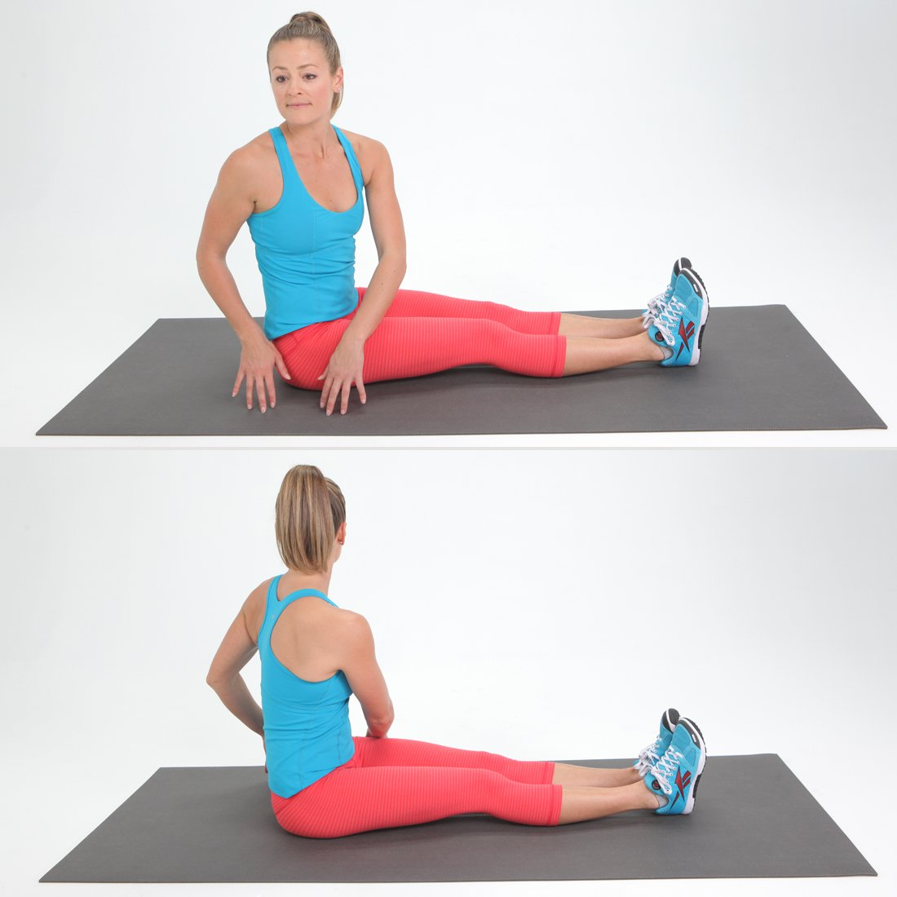
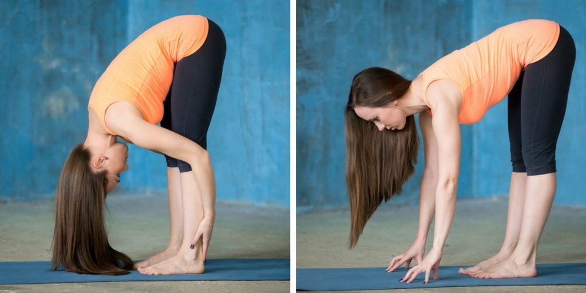

Flexibility or limberness refers to the absolute range of movement in a joint or series of joints, and length in muscles that cross the joints to induce a bending movement or motion. Flexibility varies between individuals, particularly in terms of differences in muscle length of multi-joint muscles. Flexibility in some joints can be increased to a certain degree by exercise, with stretching a common exercise component to maintain or improve flexibility. Quality of life is enhanced by improving and maintaining a good range of motion in the joints. Overall flexibility should be developed with specific joint range of motion needs in mind as the individual joints vary from one to another. Loss of flexibility can be a predisposing factor for physical issues such as pain syndromes or balance disorders.Gender, age, and genetics are important for range of motion. Exercise including stretching and yoga often improves flexibility.
Many factors are taken into account when establishing personal flexibility: joint structure, ligaments, tendons, muscles, skin, tissue injury, fat (or adipose) tissue, body temperature, activity level, age and gender all influence an individual's range of motion about a joint.Individual body flexibility level is measured and calculated by performing a sit and reach test, where the result is defined as personal flexibility score.
Strecthes for increasing Flexibility
1.Hip Flexor/Quad Stretch
Kneel on floor with both knees bent, shins on floor. Lunge right leg forward, so right knee is bent 90 degrees in front of you, right foot is flat on floor directly under knee, and left leg is still bent underneath you, parallel to right. Place both hands on top of right knee and press back hip forward, leaning into stretch, keeping torso upright. Hold for 30 seconds; release. Do three reps; switch legs and repeat.
2.Bridge With Leg Reach
Lie faceup on floor with knees bent 90 degrees, feet flat on floor, arms extended by sides. Extend right leg in front of you, and then slowly lift hips toward ceiling until you form a diagonal line from right knee to right shoulder, pressing upper back into floor and opening up chest. Lift right leg straight up toward ceiling; lower. Do 10 controlled reps, holding the last rep for 10 seconds. Switch legs; repeat.
3.Seated Trunk Twist
Sit tall on floor, abs engaged, and legs extended and together in front of you. Rotate ribcage to right, keeping nose in line with breastbone and abs engaged. Lift ribcage off hips to rotate further to right, growing taller, twisting as far as possible. Return to center; repeat to left to complete one rep. Do 10 reps, holding final twists for 30 seconds each.

4.Foldover Stretch
Stand tall with feet hip-width apart, knees slightly bent, arms by sides. Exhale as you bend forward from hips, lowering head toward floor, while keeping head, neck and shoulders relaxed. Wrap arms around backs of legs and hold anywhere from 45 seconds to two minutes. Bend knees and roll up slowly to release.
Tip: If you're not comfortable reaching that far, bend knees more and/or place hands on elevated surface, like yoga blocks.

5.Butterfly Stretch
Sit tall on floor with soles of feet together, knees bent out to sides. Grasp feet with hands, engage abs, and slowly lower body toward feet, going only as far as comfortable, and then holding there for 45 seconds to two minutes. Slowly release. If this pose is uncomfortable for you, elevate hips onto a couple of blankets, and then try again.
6.Reclining Pigeon
Lie faceup with knees bent, feet flat on floor. Cross flexed right foot over left thigh, hook arms around left hamstring, and lift left foot a few inches, keeping back and shoulders on floor. Gently pull right leg in toward you, until you feel a stretch; hold for 45 seconds to two minutes. Lower back to start, switch legs and repeat.
7.Swan Stretch
Lie facedown on floor with hands in front of shoulders, fingers facing forward, legs together and extended behind you. Press into hands to lift belly off floor. Keeping abs engaged, shoulders down and pelvis grounded, lengthen upper body away from mat, reaching out and up from crown of head. Draw shoulder blades together, opening chest. Hold for 30 to 45 seconds; release. Do five reps.
8.Standing Triceps Stretch
Stand tall with feet hip-width apart, arms extended overhead. Bend right elbow so right palm lands on upper back. Reach left hand over to grasp just below right elbow. Gently pull elbow back and toward head; hold for about 45 seconds. Switch arms and repeat.
9.Twisted Arm Stretch
Sit (or stand) tall, with abs engaged, legs crossed and shoulders down. Extend arms out to shoulder level in front of you and cross right arm over left. Lock elbows, lift hands toward ceiling, and then work to twist hands around until palms face each other. Hold for about 45 seconds; unwind and repeat on other side.
10.Standing Thigh Release
Stand tall with abs engaged, feet together, arms by sides. Bring right heel toward butt and grasp top of foot with right hand. Extend left arm overhead (or place on chair) to help balance. Press right foot into hand to increase stretch along front of thigh. Hold for about one minute; release, switch sides and repeat.